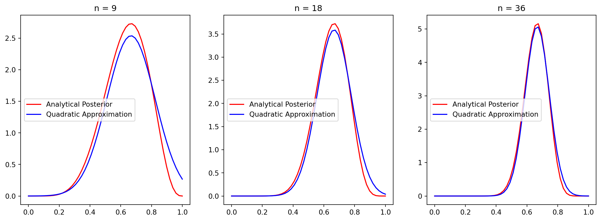
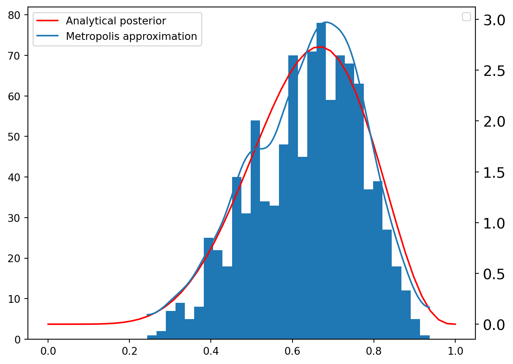

Show code
import numpy as np
# change this to increase/decrease approximation precision
N_OUT = 20
p_grid = np.linspace(0, 1, N_OUT)Statistical modeling exists dualistically, in a small world (contained by the model’s inherent logic) and a big world (the context in which the model will live).
In the small world, it is important to make sure the model is valid, consistent, and well-behaved.
The large world is the broader context in which the finalized model will exist. It is important to note that the statistical model always underrepresents the full context of the large world. Out of sample data emerge, and a model’s logical inconsistencies can surface.
Adapting to the large world is a straightforward process, for nature. For Bayesian models, the process is much more complex. It is difficult to beat natural heuristics once a model identifies what to look for.
Chapter 2 focuses on the small world.
Bayesian analysis lends itself to continually exploring alternatives. In this sense, Bayesian analysis creates a series of data “forks” in its quest to deduce.
Development of a Bayesian model is best done cyclically:
The first step is to develop a story, built on either associations or causality, about the data, particularly its variation. Data stories involve descriptions of the large world, as well as the small world sampling process. This story is then put into formal terms of probability.
Recall that any model may map back to multiple stories. Thus, model success does not necessarily imply confirmation of the story.
You create a Bayesian model with an initial estimate, your prior. Then, as you sample data, your model learns from the new data, updating itself.
The nature of Bayesian models guarantees that, within the small world, the model will achieve perfect inference. This means that extra care must be taken to evaluate the model within the large world, where small world success does not necessarily translate.
Remember that a model’s assumptions are never 100% correct. Failure to disprove a model is therefore an error of science, not a sign of success.
In the context of Bayesian models, variables refer to either observable data or unobservable parameters.
The definitions of the relationships among variables constitute a model.
To “count” an observed variable, we assign it a probability distribution, known as a likelihood.
To “count” an unobserved variable (a parameter), assign it a prior, then update the prior as the model learns from the data.
The prior is part of the model; thus, it should be developed within the same cyclic development of the rest of the model.
Priors are arbitrary, a choice made by the scientist. So, it is important to test many priors. This does not mean that the scientist has undue influence over the model. If the chosen prior is bad, the model will be bad.
Once the components have been established, the Bayesian model will update the prior distributions until the posterior distribution is determined. The posterior contains the probability distribution of different parameters, conditioned on the data and model.
Note that the following equations are equivalent:
\[ \Pr(A,B) = \Pr(A|B)\Pr(B) \tag{2.1} \]
\[ \Pr(A,B) = \Pr(B|A)\Pr(A) \tag{2.2} \]
Both equations represent the joint probability space of \(A\) and \(B\). \((2.1)\) does so by first asking “what is the probability of \(B\)?” Then, let’s suppose \(B\) occurs. Now, \(B\) having occurred, “what is the probability of \(A\)?” Multiply the two results together. \((2.2)\) follows the same sequence but in reverse.
The result is logical equivalence:
\[ \Pr(A|B)\Pr(B) = \Pr(B|A)\Pr(A) \tag{2.3} \]
Note that this equivalence can also be reached mathematically, via the definition of conditional probability (in the discrete case) or conditional density (continuous).
Bayes’ theorem wonderfully exploits this equivalence:
\[ \Pr(B|A) = \frac{\Pr(A|B)\Pr(B)}{\Pr(A)} \tag{2.4} \]
Why is the Bayes’ theorem expression better? The answer lies in practice:
\[ \Pr(B|A) \propto \Pr(A|B)\Pr(B) \tag{2.5} \]
\((2.5)\) says that the posterior is proportional to the likelihood multiplied by the prior. Since we choose the prior, we simply have to calculate the likelihood to find the shape of the posterior. We don’t need the exact density values; any needed estimation can be performed on the proportional density.
While Bayes’ theorem is used by any probability-based inference, Bayesian inference concerns specifically the generalization of Bayes’ theorem to abstractions like parameters and models.
Rethinking introduces three motors that each approximate Bayesian inference:
Similar to grid search in machine learning, grid approximation in Bayesian inference achieves great performance in approximating the posterior, using a discrete set of possible parameter values.
Grid approximation follows 5 steps:
import numpy as np
# change this to increase/decrease approximation precision
N_OUT = 20
p_grid = np.linspace(0, 1, N_OUT)import scipy.stats as st
likelihood = st.binom.pmf(6, 9, p_grid)priors = {
"Uniform": np.ones(N_OUT),
"Step Function": (p_grid >= 0.5).astype(float),
"Exponential Peak": np.exp(-5 * np.abs(p_grid - 0.5)),
}posteriors = {
name: (likelihood * prior) / (likelihood * prior).sum()
for name, prior in priors.items()
}import matplotlib.pyplot as plt
fig, axes = plt.subplots(3, 1, figsize=(8, 15), sharey=True)
for ax, (name, posterior) in zip(axes, posteriors.items()):
ax.plot(p_grid, posterior, "-o")
ax.set_title(name)
ax.set_xlabel("Probability of success")
axes[0].set_ylabel("Posterior probability")
plt.tight_layout()
plt.show()
Generally, the area near the peak of the posterior will be nearly Gaussian. So, the posterior can be approximated by a Gaussian distribution.
This Gaussian approximation is known as quadratic approximation because the logarithm of a normal distribution is a parabola. Quadratic approximation is also referred to as:
Quadratic approximation is convenient because you only ever need to estimate two parameters: mean and variance. Grid search, in contrast, scales exponentially with the number of parameters.
Quadratic approximation is comprised of two steps:
Suppose we are interested in estimating parameter \(\theta\) via quadratic approximation. That is,
\[ \theta \sim \mathcal{N}(\mu, \sigma^2). \tag{2.6} \]
The posterior of \(\theta\) is thus provided by the pmf. \[ p(\theta) = \frac{1}{\sqrt{2\pi\sigma^2}} \exp\left(-\frac{(\theta - \mu)^2}{2\sigma^2}\right). \tag{2.7} \]
Taking the natural log provides the log-posterior.
\[ f(\theta) = \ln(p(\theta)) = -\frac{1}{2}\ln(2\pi\sigma^2)- \frac{(\theta - \mu)^2}{2\sigma^2}. \tag{2.8} \]
We are interested in the shape of the distribution near the mode. We label this peak \(\hat{\theta}\).
To approximate \(f(\theta)\), we use a Taylor expansion.
\[ f(\theta) \approx f(\hat{\theta}) + f'(\hat{\theta})(\theta - \hat{\theta}) + \frac{1}{2}f''(\hat{\theta})(\theta - \hat{\theta})^2. \tag{2.9} \]
Since \(\hat{\theta}\) is the peak of the distribution, we know that \(f'(\hat{\theta})\) equals 0. This simplifies \(f(\theta)\).
\[ f(\theta) \approx \text{const} + \frac{1}{2}f''(\hat{\theta})(\theta - \hat{\theta})^2. \tag{2.10} \]
Since \(f(\theta)\) equals \(\ln(p(\theta))\), we set the equations approximately equal to each other.
\[ -\frac{1}{2}\ln(2\pi\sigma^2)- \frac{(\theta - \mu)^2}{2\sigma^2} \approx \text{const} + \frac{1}{2}f''(\hat{\theta})(\theta - \hat{\theta})^2. \tag{2.11} \]
Ignoring the constant terms shows us that
\[ -\frac{1}{2\sigma^2}(\theta - \mu)^2 \approx \frac{1}{2}f''(\hat{\theta})(\theta - \hat{\theta})^2. \tag{2.12} \]
Thus,
\[ -\frac{1}{\sigma^2} \approx f''(\hat{\theta}). \tag{2.13} \]
The Hessian, \(H\), is the matrix of partial second derivatives. In other terms,
\[ f''(\hat{\theta}) = H. \tag{2.14} \]
So, we can rewrite \(\sigma\) in terms of the Hessian.
\[ \begin{align} -\frac{1}{\sigma^2} &\approx H \tag{2.15} \\ \sigma^2 &\approx -\frac{1}{H} \tag{2.16} \\ \sigma &\approx \sqrt{-\frac{1}{H}}. \tag{2.17} \end{align} \]
The pymc translation provides an implementation of quadratic approximation that utilizes these special properties of the normal distribution. My class below organizes the fitting code together with the analysis and plotting.
import pymc as pm
class BinomialQuadraticApproximation:
def __init__(self, W: int, L: int):
self.W = W
self.L = L
self._mu_last = None
self._sigma_last = None
@property
def n(self) -> int:
"""
Number of trials. Equals W + L.
"""
return self.W + self.L
@property
def last_fit(self):
"""
Returns mu, sigma (None, None if .fit() has not been called)
"""
return self._mu_last, self._sigma_last
def ci(self, q):
"""
Given quantile, calcualtes credible interval for most recent fit
"""
mu, sigma = self.last_fit
if mu is None or sigma is None:
raise ValueError("Run .fit() before computing credible intervals")
return st.norm.ppf(q, loc=mu, scale=sigma)
def plot(self, ax=None):
mu, sigma = self.last_fit
if mu is None or sigma is None:
raise ValueError("Run .fit() before plotting")
a = self.W + 1
b = self.L + 1
x = np.linspace(0, 1)
if ax is None:
fig, ax = plt.subplots(1, 1)
ax.plot(x, st.beta.pdf(x, a, b), "r-", label="Analytical Posterior")
ax.plot(x, st.norm.pdf(x, mu, sigma), "b-", label="Quadratic Approximation")
ax.set_title(f"n = {self.n}")
ax.legend()
def fit(self):
"""
Objective is to identify mu and sigma to fit the posterior normal
distribution.
mu is a model parameter, the average probability of success. mu receives
a uniform prior and its MAP will be used for inference
sigma is obtained using the hessian at the MAP.
Taken together, N(mu, sigma) represents the posterior distribution of the
probability of success.
# Notes:
## `default_transform=None`
- In pymc5, `default_transform=None` can be added to the parameter,
rather than as tags after the fact.
- Transformation to log-odds are performed by default on bounded
parameters
- We disable so that we may compute the hessian on the untransformed
space
## 'Powell' optimizer
- Contrary to the translation example, here, the default optimizer does
not move `p` when `default_transform=None`
- 'Powell' returns 0.67 as expected
"""
with pm.Model() as model:
# parameters
## p: prior: uniform over [0,1]
p = pm.Uniform("p", 0, 1, default_transform=None)
# likelihood: binomial
x = pm.Binomial("x", n=self.n, p=p, observed=self.W)
# find MAP
MAP = pm.find_MAP(method="Powell")
# estimate sigma at MAP
hessian = pm.find_hessian(MAP, vars=[p], negate_output=False)
sigma = np.sqrt(-np.linalg.inv(hessian))[0][0]
self._set_last_fit(MAP["p"], sigma)
return self.last_fit
def _set_last_fit(self, mu, sigma):
self._mu_last = mu
self._sigma_last = sigma/opt/hostedtoolcache/Python/3.14.2/x64/lib/python3.14/site-packages/arviz/__init__.py:39: FutureWarning:
ArviZ is undergoing a major refactor to improve flexibility and extensibility while maintaining a user-friendly interface.
Some upcoming changes may be backward incompatible.
For details and migration guidance, visit: https://python.arviz.org/en/latest/user_guide/migration_guide.html
warn(We can use the final parameter values to analyze our distribution:
model = BinomialQuadraticApproximation(6, 3)
mu, sigma = model.fit()
ci_lower = model.ci(0.055)
ci_upper = model.ci(0.945)/opt/hostedtoolcache/Python/3.14.2/x64/lib/python3.14/site-packages/rich/live.py:260: UserWarning: install
"ipywidgets" for Jupyter support
warnings.warn('install "ipywidgets" for Jupyter support')
/opt/hostedtoolcache/Python/3.14.2/x64/lib/python3.14/site-packages/scipy/optimize/_optimize.py:2540: RuntimeWarning: invalid value encountered in scalar multiply tmp2 = (x - v) * (fx - fw)
| Parameter | Mean (MAP) | Std Dev | 5.5% Credible Interval (CI) | 94.5% CI |
|---|---|---|---|---|
| \(p\) | 0.67 | 0.16 | 0.42 | 0.92 |
We can compare the “true” posterior with the quadratic approximation:
w_values = [6, 12, 24]
fig, axes = plt.subplots(1, len(w_values), figsize=(5*len(w_values),5))
for i, w in enumerate(w_values):
model = BinomialQuadraticApproximation(w, int(w * 0.5))
model.fit()
model.plot(ax=axes[i])
plt.show()/opt/hostedtoolcache/Python/3.14.2/x64/lib/python3.14/site-packages/rich/live.py:260: UserWarning: install
"ipywidgets" for Jupyter support
warnings.warn('install "ipywidgets" for Jupyter support')
/opt/hostedtoolcache/Python/3.14.2/x64/lib/python3.14/site-packages/scipy/optimize/_optimize.py:2540: RuntimeWarning: invalid value encountered in scalar multiply tmp2 = (x - v) * (fx - fw)
/opt/hostedtoolcache/Python/3.14.2/x64/lib/python3.14/site-packages/rich/live.py:260: UserWarning: install
"ipywidgets" for Jupyter support
warnings.warn('install "ipywidgets" for Jupyter support')
/opt/hostedtoolcache/Python/3.14.2/x64/lib/python3.14/site-packages/scipy/optimize/_optimize.py:2540: RuntimeWarning: invalid value encountered in scalar multiply tmp2 = (x - v) * (fx - fw)
/opt/hostedtoolcache/Python/3.14.2/x64/lib/python3.14/site-packages/rich/live.py:260: UserWarning: install
"ipywidgets" for Jupyter support
warnings.warn('install "ipywidgets" for Jupyter support')
/opt/hostedtoolcache/Python/3.14.2/x64/lib/python3.14/site-packages/scipy/optimize/_optimize.py:2540: RuntimeWarning: invalid value encountered in scalar multiply tmp2 = (x - v) * (fx - fw)

Since grid approximation scales poorly and quadratic approximation does not fit most scenarios, Markov chain Monte Carlo (MCMC), along with other model fitting techniques, have been developed.
MCMC works by sampling from the posterior directly; the result is a sampling distribution of the parameters.
This pymc5 implementation uses the Metropolis Algorithm, explained in Chapter 9.
W = 6
L = 3
N = 1000
p = np.repeat(0.0, N)
p[0] = 0.5
q0 = st.binom.pmf(W, W + L, p[0])
for i in range(1, N):
# Propose a value
p_new = st.norm.rvs(p[i - 1], 0.1)
# Enforce [0, 1]
while p_new < 0:
p_new = np.abs(p_new)
while p_new > 1:
p_new = 2 - p_new
# Accept/Reject
q1 = st.binom.pmf(W, W + L, p_new)
if st.uniform.rvs(0, 1) < q1 / q0:
# Accept
p[i] = p_new
q0 = q1
else:
# Reject
p[i] = p[i - 1]The resulting sampling distribution can be visualized alongside its estimated density and the analytical posterior.
import arviz as az
x = np.linspace(0, 1)
fig, ax = plt.subplots(1, 1)
ax2 = ax.twinx()
ax2.plot(x, st.beta.pdf(x, W + 1, L + 1), "r-", label="Analytical posterior")
az.plot_kde(p, label="Metropolis approximation")
ax.hist(p, bins=30)
fig.tight_layout()
ax.legend()
plt.show()/tmp/ipykernel_6110/294223342.py:13: UserWarning: No artists with labels found to put in legend. Note that artists whose label start with an underscore are ignored when legend() is called with no argument.
ax.legend()
Note that \(\Pr(A)\) is measurable via the Law of Total Probability:
\[ \Pr(A) = \mathbb{E}[\Pr(A|B)] = \int{\Pr(A|B)\Pr(B)dB} \tag{A2.1} \]
\(\mathbb{E}[\Pr(A|B)]\) is also referred to as the marginal likelihood.